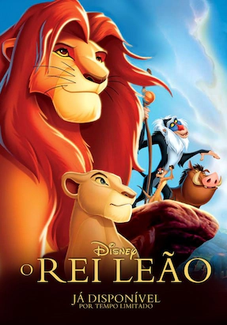
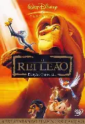
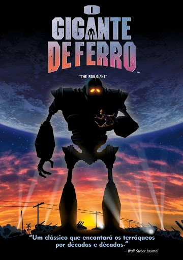
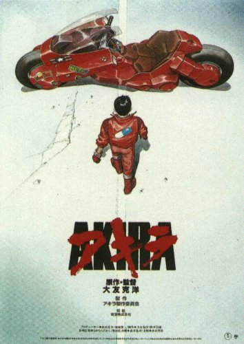
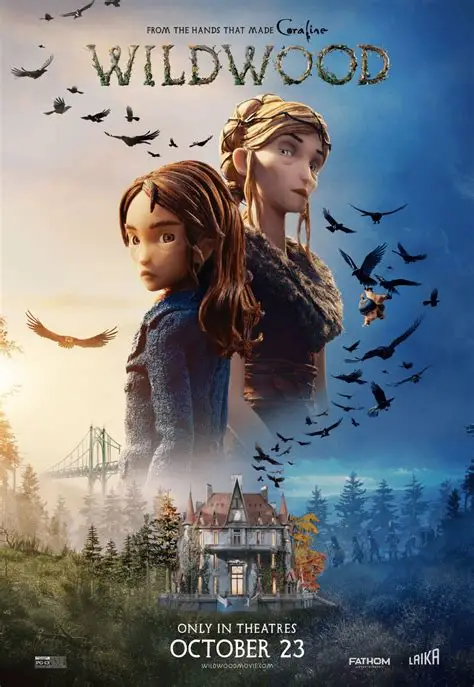
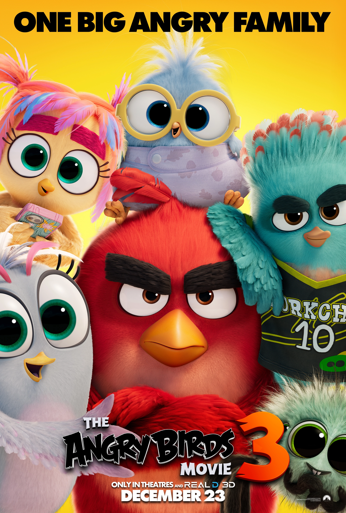

Rei Leão (1999)
Simba foge após a morte do pai e cresce longe do reino.Anos depois, retorna para derrotar Scar e se tornar rei.
Go somewhereRei Leão(1999)

Rei Leão conta a história de Simba, um jovem leão que precisa enfrentar a perda do pai e o plano de seu tio Scar para tomar o poder. Ao crescer, Simba retorna para recuperar seu lugar como rei e salvar seu reino. Durante sua jornada, ele faz novos amigos e aprende importantes lições sobre coragem e responsabilidade. No final, Simba enfrenta Scar e luta para restaurar a paz e o equilíbrio nas Terras do Reino.
O Rei Leão se tornou marcante por combinar uma história emocionante com personagens inesquecíveis, músicas memoráveis e importantes lições de vida. O filme acompanha Simba, um jovem leão que precisa enfrentar a perda do pai, superar a culpa e assumir seu lugar como rei. Essa jornada de amadurecimento faz com que muitas pessoas se identifiquem com o personagem, principalmente por abordar temas como família, responsabilidade, coragem e autoconhecimento.
A viagem de Chihiro(2001)

A Viagem de Chihiro conta a história de Chihiro, uma menina que entra em um mundo mágico onde seus pais são transformados em porcos. Para salvá-los e voltar para casa, ela precisa trabalhar em uma casa de banhos para espíritos e enfrentar vários desafios.
A viagem de Chihiro é marcante porque mistura fantasia, aventura e emoção, além de mostrar o amadurecimento de Chihiro. O filme também se destaca pelos personagens, pela animação e pelas mensagens sobre coragem, amizade e identidade. Além disso, sua história é cheia de mistérios e momentos emocionantes. Por isso, é considerado um dos filmes de animação mais importantes e memoráveis.
O Gigante de Ferro(1999)

O Gigante de Ferro conta a história de Hogarth, um garoto que encontra um enorme robô vindo do espaço. Apesar de seu tamanho e aparência assustadora, o Gigante é gentil e não entende o mundo dos humanos. Hogarth se torna amigo dele e ensina sobre amizade, respeito e a diferença entre o bem e o mal.
Porém, um agente do governo chamado Kent acredita que o robô é uma ameaça. Os militares decidem destruí-lo, fazendo com que o Gigante precise escolher entre lutar ou proteger as pessoas. No momento decisivo, ele escolhe salvar a cidade, mostrando que não precisa ser uma arma. A história transmite uma mensagem sobre amizade, escolhas, coragem e a importância de escolher fazer o bem.
O Gigante de Ferro se tornou marcante por sua amizade com Hogarth e pela emocionante escolha de se sacrificar para salvar as pessoas. Ele mostra que, mesmo sendo criado como uma arma, pode escolher ser um herói e fazer o bem.
Akira(1988)

Em uma Neo-Tóquio pós-apocalíptica, o jovem Kaneda se envolve em um projeto militar secreto. Seu amigo Tetsuo desperta poderes psíquicos devastadores e começa a perder o controle. Enquanto o caos toma conta da cidade, Kaneda tenta impedir que Tetsuo destrua tudo ao seu redor.
Akira foi marcante por apresentar uma animação extremamente detalhada e revolucionária para sua época. Seu visual cyberpunk de Neo-Tóquio influenciou diversos filmes, animes e jogos ao longo dos anos. A história também se destacou por abordar temas como poder, violência, ciência e corrupção. Além disso, ajudou a popularizar a animação japonesa e o anime no mundo todo.
lançamentos Novo

Wildwood
Prue e Curtis enfrentam perigos em uma floresta mágica para resgatar o irmão bebê sequestrado por corvos. em uma animação stop-motion da LAIKA..
Va assistir
Angry-Birds
Red enfrenta os desafios da paternidade e uma nova ameaça que coloca a Ilha dos Pássaros em perigo.a animação é feita pela DNEG Animation.